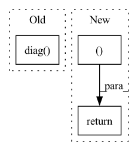

Pattern ID :920
Before Change
A = confusion_matrix(labels, outputs)
if np.sum(A) > 0:
accuracy = np.sum(np.diag( A) ) / np.sum(A)
else:
accuracy = float("nan")
After Change
m = _metrics_from_confusion_matrix(labels, outputs, num_classes)
return m["macro_acc"], m["acc"]
def QRS_score(
rpeaks_truths: Sequence[Union[np.ndarray, Sequence[int]]],In pattern: SUPERPATTERN
Frequency: 4
Non-data size: 3
Instances Fragment ID: 4420450
Project Name: deeppsp/torch_ecg
Commit Name: 285eb710e3d419b5e4e5173b8f02faefb83c252a
Time: 2022-03-30
Author: wenh06@gmail.com
File Name: torch_ecg/utils/utils_metrics.py
M Class Name: AnonimousClass
N Class Name: AnonimousClass
M Method Name: accuracy(3)
N Method Name: accuracy(3)
M Parent Class:
N Parent Class:
M File Name: torch_ecg/utils/utils_metrics.py
N File Name: torch_ecg/utils/utils_metrics.py
M Start Line: 302
M End Line: 310
N Start Line: 506
N End Line: 508
Before Change
// todo: is clamp really necessary?
log_std = self.std_clamp(log_std)
std = log_std.exp()
m = MultivariateNormal(mean.reshape(-1), torch.diag( std.reshape(-1)) )
action = m.sample()
action = action.reshape(mean.shape)
After Change
action_bound_compensation = action_bound_compensation.sum(dim=-1, keepdim=True)
log_prob.sub_(action_bound_compensation)
return action, log_prob
if __name__ == "__main__":
use_cuda = torch.cuda.is_available() Fragment ID: 4420449
Project Name: tmdt-buw/karolos
Commit Name: e8ce439013ace3e3e9647de55ed22ddf38f35396
Time: 2020-04-23
Author: scheiderer@uni-wuppertal.de
File Name: agents/nnfactory/sac.py
M Class Name: Policy
N Class Name: Policy
M Method Name: forward(3)
N Method Name: forward(3)
M Parent Class: nn.Module
N Parent Class: nn.Module
M File Name: agents/nnfactory/sac.py
N File Name: agents/nnfactory/sac.py
M Start Line: 103
M End Line: 115
N Start Line: 104
N End Line: 123
Before Change
@ self.R_12.T
@ np.diag(1 / self.Bs[0])
@ self.R_12
@ np.diag( 1 / np.sqrt(self.Bs[1]))
)
return M, None
def _multi_view_evp(self, Us, Ss):After Change
def _two_view_evp(self, views):
R = [pca.transform(view) for pca, view in zip(self.principal_components, views)]
C = R[1].T @ R[0] @ R[0].T @ R[1]
return C, None
def _multi_view_evp(self, views):
R = [pca.transform(view) for pca, view in zip(self.principal_components, views)]
D = block_diag( Fragment ID: 4420448
Project Name: jameschapman19/cca_zoo
Commit Name: a1ba93b137f04fbe46e9c284d5c1e8c4df56ba94
Time: 2022-10-10
Author: james.chapman.19@ucl.ac.uk
File Name: cca_zoo/models/_rcca.py
M Class Name: rCCA
N Class Name: rCCA
M Method Name: _two_view_evp(2)
N Method Name: _two_view_evp(3)
M Parent Class: _BaseCCA
N Parent Class: _BaseCCA
M File Name: cca_zoo/models/_rcca.py
N File Name: cca_zoo/models/_rcca.py
M Start Line: 137
M End Line: 147
N Start Line: 136
N End Line: 138
Before Change
p, h = self.forward(state, hidden)
action_mean = self.actor(p)
cov_mat = torch.diag( self.action_var) .to(device)
dist = MultivariateNormal(action_mean, cov_mat)
action = dist.sample()After Change
p, h = self.forward(state, hidden)
action = self.actor(p)
return action, h
def evaluate(self, state, action, hidden):
p, h = self.forward(state, hidden)
action_mean = self.actor(p) Fragment ID: 4420455
Project Name: antoinetheb/rnn-rl
Commit Name: 98950acf2dc010916e579839c4240f4411b8f542
Time: 2020-02-15
Author: antoine.theberge@usherbrooke.ca
File Name: algos/PPO.py
M Class Name: ActorCritic
N Class Name: ActorCritic
M Method Name: act(3)
N Method Name: act(4)
M Parent Class: nn.Module
N Parent Class: nn.Module
M File Name: algos/PPO.py
N File Name: algos/PPO.py
M Start Line: 47
M End Line: 62
N Start Line: 48
N End Line: 50